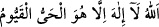
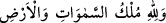
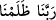
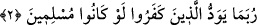

harfler ise öyle değildir. Çünkü onlar ayn âlemi’nde ortaya çıkmıştır. Böyle olan şeylere
ise ekmel/en kâmil kimselerin bilgisi mutlaka taalluk eder. Çünkü bu onların gücü
dâhilindedir. Yaratan ile yaratılanın ilmi arasındaki fark, Yaratan’ın ilminin genel ve her
şeyi kuşatan bir ilim olmasına karşılık, yaratılanınkinin bu özellikte olmamasıdır. İyi
anla, Allah seni doğru yola iletsin.
Bazıları derler ki: Her harf bir isme işârettir. Şöyle ki: ‘Elif Lâm Râ’da Elif Allah
ismine, Lâm Cibrîl ismine, Râ ise Rasûlullah (s.a.)’in ismine işârettir. Yâni, bu kelâm
Allah Teâlâ’dan Cibrîl vâsıtasıyla Rasûlullah (s.a.)’e ulaşmıştır, demektir.
“Bunlar” bu şânı yüce sûre, mutlak olarak kitâp adını alma özelliğini tekelinde
bulundurmaya lâyık olan kâmil “Kitab’ın ve apaçık” ihtivâ ettiği hikmet ve
maslahatları, yahut doğru yol ile azgınlık yolunun yahut da hak ile bâtılın, helâl ile
harâmın neler olduğunu ortaya koyan ya da mucize olduğu apaçık ortada olan yahut
düşünenler açısından mânâsı âşikâr olan ya da kendilerine indirilenlerin dil ve
üslûblarına uygun olarak indirildiği için açık olan şânı yüce “bir Kur’ân’ın
âyetleridir.” Yâni bu âyetler bütün Kur’an’ın yahut o âna kadar indirilmiş bulunan
Kur’an âyetlerinin ya da levh-i mahfuzdaki âyetlerin bir bölümüdür.
Kur’an lâfzının Kitab lâfzına atfı iki sıfatın yekdiğerine atfı kabilindendir. Yâni o hem
yazılmışlık hem de okunmuşluk vasıflarını kendinde toplayan bir kelâmdır.
et-Te’vîlâtü’n-Necmiyye’de der ki: “Bunlar’ lâfzı, “Elif Lâm Râ”ya işârettir: Yâni
bu harflerden her biri “Kitab’ın” âyetlerinden birinin bir harfidir. O kitabın âyetleri de
“apaçık bir Kur’ân’ın âyetleridir.” Buna göre Elif,
“Allah ki
O’ndan başka ilah yoktur. O, diridir, kayyûmdur (yarattıklarını koruyup
yönetendir).” (el-Bakara, 2/255); Lâm,
“Göklerin ve yerin
mülkü Allah’ındır. O, dilediğini bağışlar.” (el-Feth, 48/14) âyetine; Râ, ise
“Ey Rabbimiz! Biz kendimize zulmettik.” (el-A’râf, 7/23) âyetine işâret etmektedir.
Cenab-ı Hak bu üç âyete bu üç harf vâsıtasıyla yemin ettikten sonra “apaçık bir
Kur’ân” ifâdesiyle de bütün Kur’an’a yemin ediyor.”
2. İnkâr edenler zaman zaman, keşke biz de müslüman olsaydık, diye arzu
ederler.
Kur’an’ı ve onun Allah katından gelmiş olduğunu “inkâr edenler” âhirette “zaman
zaman,” dünyâda iken “keşke biz de müslüman olsaydık,” yâni Allah’ın hükümlerine,
emir ve yasaklarına teslim ve râzı olsaydık “diye arzu ederler.” Yâni müslüman olmayı
isterler.
Onlar hakkında gaib (üçüncü şahıs) siygası kullanılması, inkâr edenlerin